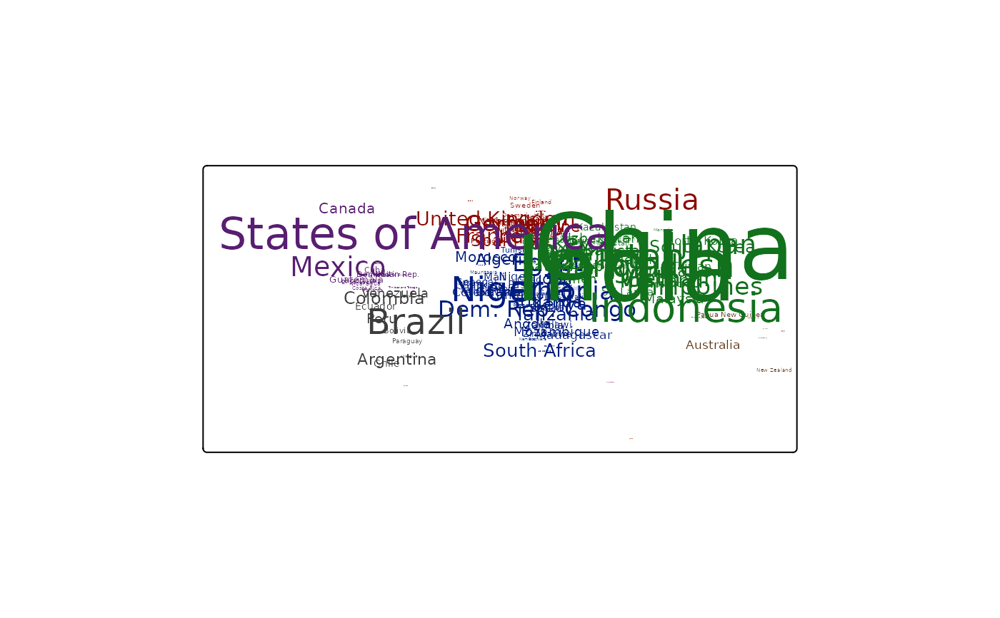
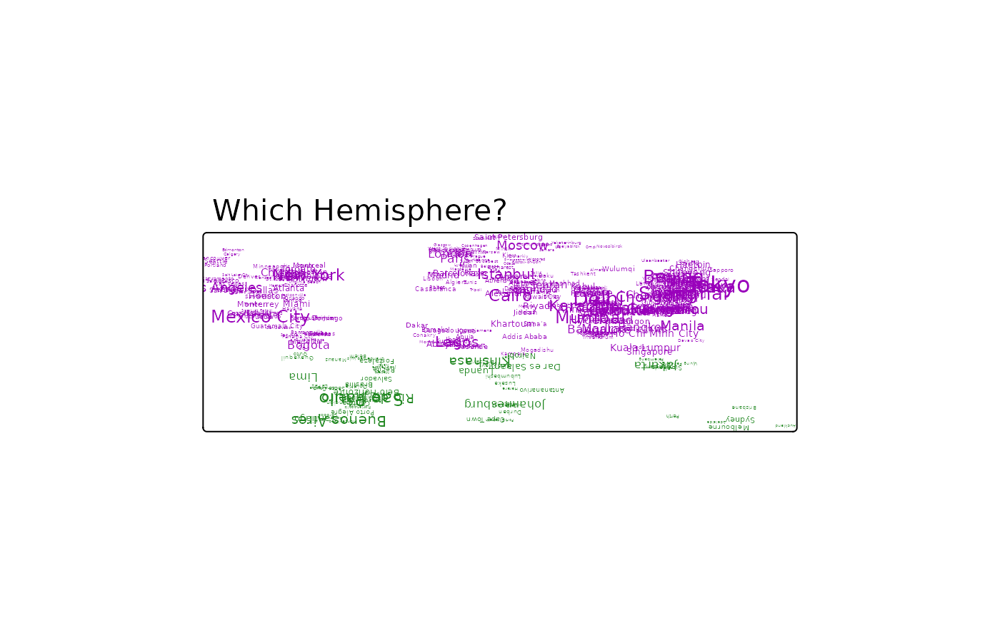

Creates a tmap-element that adds text labels.
Usage
tm_text(
text,
size = 1,
col = NA,
root = 3,
clustering = FALSE,
size.lim = NA,
sizes.legend = NULL,
sizes.legend.labels = NULL,
sizes.legend.text = "Abc",
n = 5,
style = ifelse(is.null(breaks), "pretty", "fixed"),
style.args = list(),
as.count = NA,
breaks = NULL,
interval.closure = "left",
palette = NULL,
labels = NULL,
drop.levels = FALSE,
labels.text = NA,
midpoint = NULL,
stretch.palette = TRUE,
contrast = NA,
colorNA = NA,
textNA = "Missing",
showNA = NA,
colorNULL = NA,
fontface = NA,
fontfamily = NA,
alpha = NA,
case = NA,
shadow = FALSE,
bg.color = NA,
bg.alpha = NA,
size.lowerbound = 0.4,
print.tiny = FALSE,
scale = 1,
auto.placement = FALSE,
remove.overlap = FALSE,
along.lines = FALSE,
overwrite.lines = FALSE,
just = "center",
xmod = 0,
ymod = 0,
title.size = NA,
title.col = NA,
legend.size.show = TRUE,
legend.col.show = TRUE,
legend.format = list(),
legend.size.is.portrait = FALSE,
legend.col.is.portrait = TRUE,
legend.size.reverse = FALSE,
legend.col.reverse = FALSE,
legend.hist = FALSE,
legend.hist.title = NA,
legend.size.z = NA,
legend.col.z = NA,
legend.hist.z = NA,
id = NA,
zindex = NA,
group = NA,
auto.palette.mapping = NULL,
max.categories = NULL
)Arguments
- text
name of the variable in the shape object that contains the text labels
- size
relative size of the text labels (see note). Either one number, a name of a numeric variable in the shape data that is used to scale the sizes proportionally, or the value
"AREA", where the text size is proportional to the area size of the polygons.- col
color of the text labels. Either a color value or a data variable name. If multiple values are specified, small multiples are drawn (see details).
- root
root number to which the font sizes are scaled. Only applicable if
sizeis a variable name or"AREA". Ifroot=2, the square root is taken, ifroot=3, the cube root etc.- clustering
value that determines whether the text labels are clustered in
"view"mode. One of:TRUE,FALSE, or the output ofmarkerClusterOptions.- size.lim
vector of two limit values of the
sizevariable. Only text labels are drawn whose value is greater than or equal to the first value. Text labels whose values exceed the second value are drawn at the size of the second value. Only applicable whensizeis the name of a numeric variable ofshp. See alsosize.lowerboundwhich is a threshold of the relative font size.- sizes.legend
vector of text sizes that are shown in the legend. By default, this is determined automatically.
- sizes.legend.labels
vector of labels for that correspond to
sizes.legend.- sizes.legend.text
vector of example text to show in the legend next to sizes.legend.labels. By default "Abc". When
NA, examples from the data variable whose sizes are close to the sizes.legend are taken and"NA"for classes where no match is found.- n
preferred number of color scale classes. Only applicable when
colis a numeric variable name.- style
method to process the color scale when
colis a numeric variable. Discrete gradient options are"cat","fixed","sd","equal","pretty","quantile","kmeans","hclust","bclust","fisher","jenks","dpih","headtails", and"log10_pretty". A numeric variable is processed as a categorical variable when using"cat", i.e. each unique value will correspond to a distinct category. For the other discrete gradient options (except"log10_pretty"), see the details inclassIntervals(extra arguments can be passed on viastyle.args). Continuous gradient options are"cont","order", and"log10". The first maps the values ofcolto a smooth gradient, the second maps the order of values ofcolto a smooth gradient, and the third uses a logarithmic transformation. The numeric variable can be either regarded as a continuous variable or a count (integer) variable. Seeas.count.- style.args
arguments passed on to
classIntervals, the function that determine color classes (see alsostyle).- as.count
when
colis a numeric variable, should it be processed as a count variable? For instance, ifstyle = "pretty",n = 2, and the value range of the variable is 0 to 10, then the column classes foras.count = TRUEare 0; 1 to 5; 6 to 10 (note that 0 is regarded as an own category) whereas foras.count = FALSEthey are 0 to 5; 5 to 10. Only applicable ifstyleis"pretty","fixed", or"log10_pretty". By default,TRUEifstyleis one of these, and the variable is an integer.- breaks
in case
style=="fixed", breaks should be specified. Thebreaksargument can also be used whenstyle="cont". In that case, the breaks are mapped evenly to the sequential or diverging color palette.- interval.closure
value that determines whether where the intervals are closed:
"left"or"right". Only applicable ifcolis a numeric variable. Ifas.count = TRUE,inverval.closureis always set to"left".- palette
a palette name or a vector of colors. See
tmaptools::palette_explorer()for the named palettes. Use a"-"as prefix to reverse the palette. The default palette is taken fromtm_layout's argumentaes.palette, which typically depends on the style. The type of palette fromaes.paletteis automatically determined, but can be overwritten: use"seq"for sequential,"div"for diverging, and"cat"for categorical.- labels
labels of the color classes, applicable if
colis a data variable name- drop.levels
should unused color classes be omitted?
FALSEby default.- labels.text
Example text to show in the legend next to the
labels. WhenNA(default), examples from the data variable are taken and"NA"for classes where they don't exist.- midpoint
The value mapped to the middle color of a diverging palette. By default it is set to 0 if negative and positive values are present. In that case, the two sides of the color palette are assigned to negative respectively positive values. If all values are positive or all values are negative, then the midpoint is set to
NA, which means that the value that corresponds to the middle color class (seestyle) is mapped to the middle color. Only applies whencolis a numeric variable. If it is specified for sequential color palettes (e.g."Blues"), then this color palette will be treated as a diverging color palette.- stretch.palette
Logical that determines whether the categorical color palette should be stretched if there are more categories than colors. If
TRUE(default), interpolated colors are used (like a rainbow). IfFALSE, the palette is repeated.- contrast
vector of two numbers that determine the range that is used for sequential and diverging palettes (applicable when
auto.palette.mapping=TRUE). Both numbers should be between 0 and 1. The first number determines where the palette begins, and the second number where it ends. For sequential palettes, 0 means the brightest color, and 1 the darkest color. For diverging palettes, 0 means the middle color, and 1 both extremes. If only one number is provided, this number is interpreted as the endpoint (with 0 taken as the start).- colorNA
colour for missing values. Use
NULLfor transparency.- textNA
text used for missing values.
- showNA
logical that determines whether missing values are named in the legend. By default (
NA), this depends on the presence of missing values.- colorNULL
colour for polygons that are shown on the map that are out of scope
- fontface
font face of the text labels. By default, determined by the fontface argument of
tm_layout.- fontfamily
font family of the text labels. By default, determined by the fontfamily argument of
tm_layout.- alpha
transparency number between 0 (totally transparent) and 1 (not transparent). By default, the alpha value of the
fontcoloris used (normally 1).- case
case of the font. Use "upper" to generate upper-case text, "lower" to generate lower-case text, and
NAto leave the text as is.- shadow
logical that determines whether a shadow is depicted behind the text. The color of the shadow is either white or yellow, depending of the
fontcolor.- bg.color
background color of the text labels. By default,
bg.color=NA, so no background is drawn.- bg.alpha
number between 0 and 1 that specifies the transparency of the text background (0 is totally transparent, 1 is solid background).
- size.lowerbound
lowerbound for
size. Only applicable whensizeis not a constant. Ifprint.tinyisTRUE, then all text labels which relative text is smaller thansize.lowerboundare depicted at relative sizesize.lowerbound. Ifprint.tinyisFALSE, then text labels are only depicted if their relative sizes are at leastsize.lowerbound(in other words, tiny labels are omitted).- print.tiny
boolean, see
size.lowerbound- scale
text size multiplier, useful in case
sizeis variable or"AREA".- auto.placement
logical (or numeric) that determines whether the labels are placed automatically. If
TRUE, the labels are placed next to the coordinate points with as little overlap as possible using the simulated annealing algorithm. Therefore, it is recommended for labeling spatial dots or symbols. If a numeric value is provided, this value acts as a parameter that specifies the distance between the coordinate points and the text labels in terms of text line heights.- remove.overlap
logical that determines whether the overlapping labels are removed
- along.lines
logical that determines whether labels are rotated along the spatial lines. Only applicable if a spatial lines shape is used.
- overwrite.lines
logical that determines whether the part of the lines below the text labels is removed. Only applicable if a spatial lines shape is used.
- just
justification of the text relative to the point coordinates. Either one of the following values:
"left","right","center","bottom", and"top", or a vector of two values where first value specifies horizontal and the second value vertical justification. Besides the mentioned values, also numeric values between 0 and 1 can be used. 0 means left justification for the first value and bottom justification for the second value. Note that in view mode, only one value is used.- xmod
horizontal position modification of the text (relatively): 0 means no modification, and 1 corresponds to the height of one line of text. Either a single number for all polygons, or a numeric variable in the shape data specifying a number for each polygon. Together with
ymod, it determines position modification of the text labels. In most coordinate systems (projections), the origin is located at the bottom left, so negativexmodmove the text to the left, and negativeymodvalues to the bottom.- ymod
vertical position modification. See xmod.
- title.size
title of the legend element regarding the text sizes
- title.col
title of the legend element regarding the text colors
- legend.size.show
logical that determines whether the legend for the text sizes is shown
- legend.col.show
logical that determines whether the legend for the text colors is shown
- legend.format
list of formatting options for the legend numbers. Only applicable if
labelsis undefined. Parameters are:- fun
Function to specify the labels. It should take a numeric vector, and should return a character vector of the same size. By default it is not specified. If specified, the list items
scientific,format, anddigits(see below) are not used.- scientific
Should the labels be formatted scientifically? If so, square brackets are used, and the
formatof the numbers is"g". Otherwise,format="f", andtext.separator,text.less.than, andtext.or.moreare used. Also, the numbers are automatically rounded to millions or billions if applicable.- format
By default,
"f", i.e. the standard notationxxx.xxx, is used. Ifscientific=TRUEthen"g", which means that numbers are formatted scientifically, i.e.n.dddE+nnif needed to save space.- digits
Number of digits after the decimal point if
format="f", and the number of significant digits otherwise.- big.num.abbr
Vector that defines whether and which abbrevations are used for large numbers. It is a named numeric vector, where the name indicated the abbreviation, and the number the magnitude (in terms on numbers of zero). Numbers are only abbrevation when they are large enough. Set it to
NAto disable abbrevations. The default isc("mln" = 6, "bln" = 9). For layers wherestyleis set tolog10orlog10_pretty, the default isNA.- prefix
Prefix of each number
- suffix
Suffix of each number
- prefix
Prefix of each number
- suffix
Suffix of each number
- text.separator
Character string to use to separate numbers in the legend (default: "to").
- text.less.than
Character value(s) to use to translate "Less than". When a character vector of length 2 is specified, one for each word, these words are aligned when
text.to.columns = TRUE- text.or.more
Character value(s) to use to translate "or more". When a character vector of length 2 is specified, one for each word, these words are aligned when
text.to.columns = TRUE- text.align
Value that determines how the numbers are aligned,
"left","center"or"right". By default"left"for legends in portrait format (legend.is.portrait = TRUE), and"center"otherwise.- text.to.columns
Logical that determines whether the text is aligned to three columns (from, text.separator, to). By default
FALSE.- html.escape
Logical that determins whther HTML code is escaped in the popups in view mode. By default
TRUE. If set toFALSEHTML code can be added, e.g. to added white space via .- ...
Other arguments passed on to
formatC
- legend.size.is.portrait
logical that determines whether the legend element regarding the text sizes is in portrait mode (
TRUE) or landscape (FALSE)- legend.col.is.portrait
logical that determines whether the legend element regarding the text colors is in portrait mode (
TRUE) or landscape (FALSE)- legend.size.reverse
logical that determines whether the items of the legend regarding the text sizes are shown in reverse order, i.e. from bottom to top when
legend.size.is.portrait = TRUEand from right to left whenlegend.size.is.portrait = FALSE- legend.col.reverse
logical that determines whether the items of the legend regarding the text colors are shown in reverse order, i.e. from bottom to top when
legend.col.is.portrait = TRUEand from right to left whenlegend.col.is.portrait = FALSE- legend.hist
logical that determines whether a histogram is shown regarding the text colors
- legend.hist.title
title for the histogram. By default, one title is used for both the histogram and the normal legend for text colors.
- legend.size.z
index value that determines the position of the legend element regarding the text sizes with respect to other legend elements. The legend elements are stacked according to their z values. The legend element with the lowest z value is placed on top.
- legend.col.z
index value that determines the position of the legend element regarding the text colors. (See
legend.size.z)- legend.hist.z
index value that determines the position of the histogram legend element. (See
legend.size.z)- id
name of the data variable that specifies the indices of the text labels. Only used for
"view"mode (seetmap_mode).- zindex
zindex of the pane in view mode. By default, it is set to the layer number plus 400. By default, the tmap layers will therefore be placed in the custom panes
"tmap401","tmap402", etc., except for the base tile layers, which are placed in the standard"tile". This parameter determines both the name of the pane and the z-index, which determines the pane order from bottom to top. For instance, ifzindexis set to 500, the pane will be named"tmap500".- group
name of the group to which this layer belongs in view mode. Each group can be selected or deselected in the layer control item. Set
group = NULLto hide the layer in the layer control item. By default, it will be set to the name of the shape (specified intm_shape).- auto.palette.mapping
deprecated. It has been replaced by
midpointfor numeric variables andstretch.palettefor categorical variables.- max.categories
deprecated. It has moved to
tmap_options.
Note
The absolute fontsize (in points) is determined by the (ROOT) viewport, which may depend on the graphics device.
References
Tennekes, M., 2018, tmap: Thematic Maps in R, Journal of Statistical Software, 84(6), 1-39, doi:10.18637/jss.v084.i06
Examples
current.mode <- tmap_mode("plot")
#> tmap mode set to plotting
data(World, metro)
tm_shape(World) +
tm_text("name", size="AREA")

tm_shape(World) +
tm_text("name", size="pop_est", col="continent", palette="Dark2",
title.size = "Population", title.col="Continent") +
tm_legend(outside = TRUE)

tmap_mode("view")
#> tmap mode set to interactive viewing
if (FALSE) { # \dontrun{
require(tmaptools)
metro_aus <- crop_shape(metro, bb("Australia"))
tm_shape(metro_aus) +
tm_dots() +
tm_text("name", just = "top")
# alternative
tm_shape(metro_aus) +
tm_markers(text = "name")
} # }
# restore current mode
tmap_mode(current.mode)
#> tmap mode set to plotting